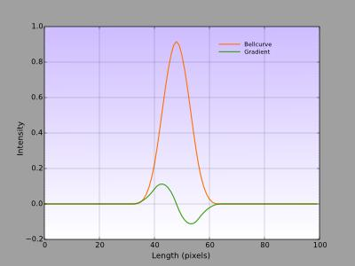
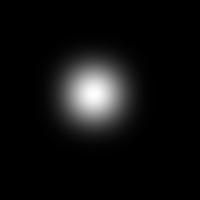
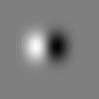
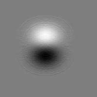
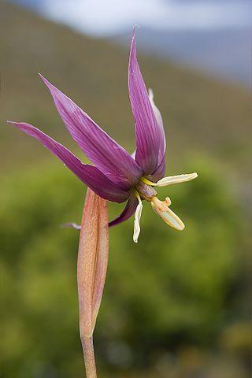
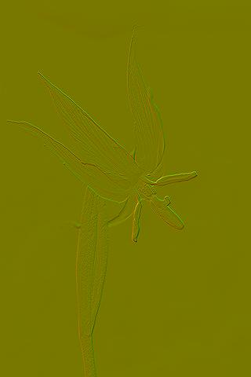

-gradient
The gradient of an image displays the rate of change of the operand's intensity along the horizontal (left to right), vertical (top to bottom) or depth (front to back) axes. The graph on the left charts the intensity of a one dimensional bell curve image (red), the green curve charts the bell curve's rate of change (or slope). The gradient is closely related to the first derivative, which it approximates, and is computed by taking successive differences of neighboring pixels along a given directional axis.
The format of the command is:
-gradient: axis,scheme
axis: one of 'x', 'y', or 'z' and chooses a directional axis. With 'x', the command computes the gradient by taking successive differences of pixels, from left to right, along the horizontal direction. 'y' chooses successive differences along the vertical direction from top to bottom, and 'z' chooses successive differences along the depth direction from front (top) slices to rear (bottom) slices.
scheme: can be:
- -1=backward
- 0=centered
- 1=forward
- 2=sobel
- 3=rotation-invariant (default)
- 4=deriche
- 5=vanvliet
and chooses among several different methods to estimate the gradient.
Both the axis and scheme parameters are optional. Without parameters, the command computes all significant 2d/3d components using a scheme of 3 (rotation invariant).
Examples:
|  |
 |
 |
|
A bell curve from above (cubic.png). The red curve in the graph at the beginning of this article is a horizontal section of this grayscale image, taken through the midpoint line.
Running: $ gmic cubic.png -gradient produces two gradient images, depicted on the right.
|
Horizontal gradient of the bell curve on the left (cubic.png). The green curve in the graph at the beginning of this article is a horizontal section of this image, taken along the midpoint line.
Gray maps to zero in this image and represents unchanging regions in cubic.png. Light gray and white represent positive values and regions of increasing intensity in cubic.png. Similarly dark gray and black represent negative values and regions of decreasing intensity.
|
Vertical gradient of the bell curve on the far left (cubic.png). But for orientation, the particulars of this image are the same as the horizontal gradient on the immediate left. |
|  |
 |
 |
|
A Isophysis tasmanica Tasmania, Australia. (isophysistasmanica.png)
$ gmic isophysistasmanica.png --luminance...
|
... -gradient[-1] xy,1 -a[-2,-1] c ...
We generate gradients in both the x and y directions and append these two images into the horizontal and vertical channels of a vector field.
|
... --norm[-1] -negative[-1] --unsharp[-1] 20% -cut[-1] 0,255...
We take the norm of this vector field, obtaining an image where dark lines trace the rapidly changing gradients of the original image.
|